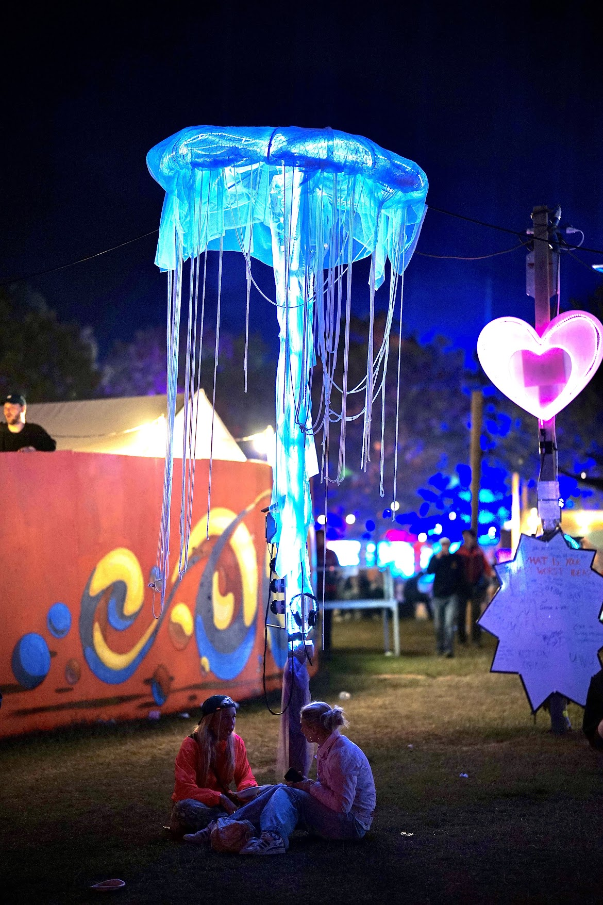
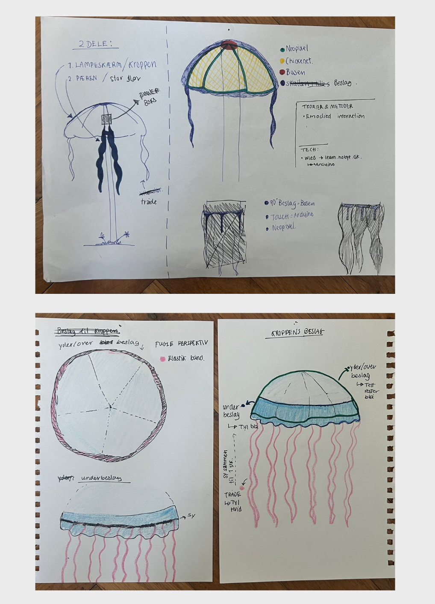

Context
Jellyfish was created for Roskilde Festival 2025 as an interactive sensory installation.
The project explored how an installation could create a temporary contrast to the festival's intense social, sonic and visual environment.
The concept
Inspired by the calm, fluid qualities of jellyfish, we designed an installation combining changing light, soft materials and subtle movement.
Rather than demanding attention, the installation was intended to invite visitors to slow down, approach it at their own pace and engage through touch and observation.
Project snapshot
Year: 2025
Context: Roskilde Festival
Type: Interactive light installation
Focus: Calm, embodiment & sensory interaction
Format: Physical installation
Tech & materials
Technology:
NeoPixel LEDs and physical computing
Materials:
Yarn, tulle, bubble wrap and chicken wire
Methods:
Iterative prototyping and material exploration

The experience
The installation created a small sensory space within the larger festival environment where visitors could pause, breathe and interact without being given a fixed task.
The open-ended interaction allowed people to touch, observe and experience the work in their own way.
Embodied interaction
Interaction was intentionally subtle. Rather than relying on screens or instructions, the project used materiality, light and physical proximity to invite engagement.
This made the body and the sensory qualities of the installation central to the experience.

From sketch to installation
The installation developed through hands-on experimentation with form, material and light.
Early sketches and prototypes were used to explore how the jellyfish form could be translated into a physical structure that felt soft, organic and visually lightweight.
Material exploration
Yarn, tulle, bubble wrap and chicken wire were combined to create transparency, softness and movement.
The materials also helped diffuse the light from the LEDs, allowing the installation to produce a more atmospheric and organic expression.
Design qualities
Calm
Flow
Softness
Transparency
Slow movement
Interaction qualities
Open-ended
Tactile
Sensory
Embodied
Non-instructional
Methods
Iterative Prototyping
Material Exploration
Embodied Interaction
Interaction Design
Technology & Materials
NeoPixel LEDs
Physical Computing
Yarn & Tulle
Bubble Wrap
Chicken Wire